Symbols: \(\phi\): Airy stress function (2D); \(G\): Green's function (3D); LEFM: linear elastic fracture mechanics; \(J\): path-independent contour integral.
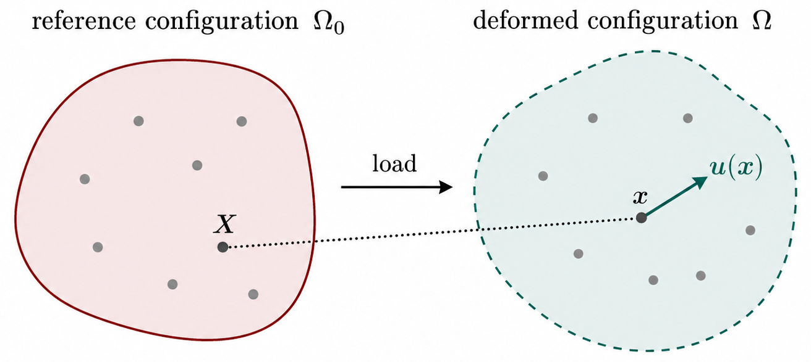
Core idea: well-posed BVP \(\rightarrow\) elastic solution \(\rightarrow\) plasticity if \(f > 0\) \(\rightarrow\) fracture if cracks grow.
Symbols: \(\boldsymbol{\sigma}\): Cauchy stress tensor; \(\mathbf{u}\): displacement field; \(\varepsilon^{p}\): plastic strain; \(f\): yield function (\(f\le 0\) elastic); \(K_I\): mode-I stress intensity factor; \(J\): \(J\)-integral (fracture).
Use ← → keys, swipe, or scroll to navigate.
Symbols: \(i,j,k\in\{1,2,3\}\): Cartesian indices (\(x_1,x_2,x_3\)); \(\delta_{ij}\): Kronecker delta; \(T_{ij}\): second-order tensor components; \(C_{ijkl}\): fourth-order stiffness components.
Symbols: \(\Omega_0,\Omega\): reference / deformed material domains; \(\mathbf{X},\mathbf{x}\): material / spatial position vectors; \(\mathbf{u}\): displacement (\(\mathbf{x}=\mathbf{X}+\mathbf{u}\)); \(\varepsilon_{ij}\): infinitesimal strain tensor; \(V,\partial V\): body and its boundary; \(S_u,S_t\): displacement / traction boundary segments.
\[ \sigma_{ij}=\sigma_{ji},\qquad \varepsilon_{ij}=\tfrac{1}{2}\!\left(\frac{\partial u_i}{\partial x_j}+\frac{\partial u_j}{\partial x_i}\right). \]
Symbols: \(\sigma_{ij}\): Cauchy stress (symmetric); \(\varepsilon_{ij}\): small-strain tensor; \(u_i\): displacement components; \(\mathbf{t},t_i\): traction vector / components; \(n_j\): outward unit normal on a surface.
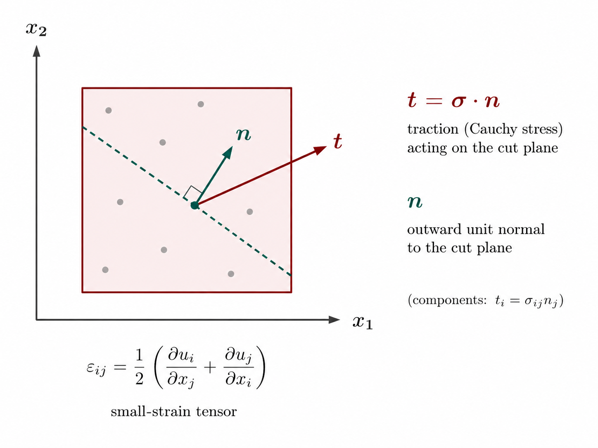
\[ \sigma_{ij}=C_{ijkl}\,\varepsilon_{kl}, \qquad \sigma = E\varepsilon\ \text{(1D)},\qquad u=\tfrac{1}{2}\sigma\varepsilon. \]
Symbols: \(C_{ijkl}\): elasticity tensor (Hooke's law); \(E\): Young's modulus; \(\nu\): Poisson's ratio; \(u\): strain-energy density per unit volume; \(\sigma_{kk}\): trace of stress (\(\sigma_{xx}+\sigma_{yy}+\sigma_{zz}\)); \(\delta_{ij}\): Kronecker delta.
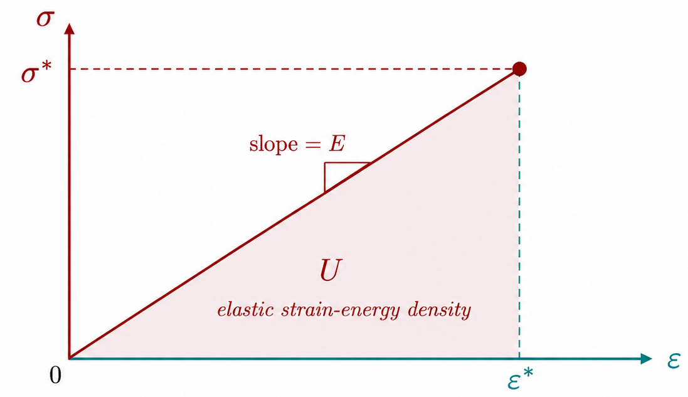
\[ \boldsymbol{\varepsilon}=\tfrac{1}{2}(\nabla\mathbf{u}+\nabla\mathbf{u}^{\top}),\quad \boldsymbol{\sigma}=\mathbb{C}:\boldsymbol{\varepsilon},\quad \nabla\!\cdot\!\boldsymbol{\sigma}+\mathbf{f}=\mathbf{0}\ \text{in }V. \]
\[ \mathbf{u}=\mathbf{u}_0\ \text{on }S_u,\qquad \boldsymbol{\sigma}\cdot\mathbf{n}=\mathbf{t}\ \text{on }S_t,\qquad \partial V=S_u\cup S_t. \]
Symbols: \(\mathbb{C}\): fourth-order elastic stiffness tensor; \(\mathbf{f}\): body-force vector per unit volume; \(\mathbf{u}_0\): prescribed displacement on \(S_u\); \(\mathbf{t}\): prescribed traction on \(S_t\); \(\mathbf{n}\): outward unit normal; \(\nabla,\cdot\): gradient / divergence.
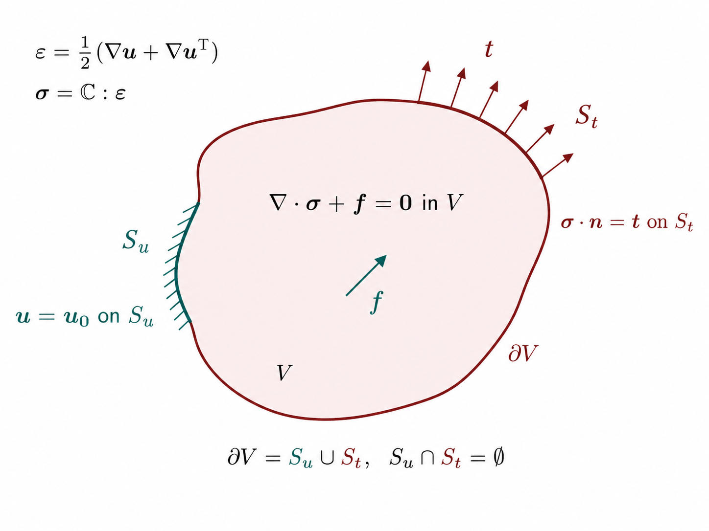
\[ \varepsilon=\frac{\mathrm{d} u}{\mathrm{d} x},\qquad N=EA\,\varepsilon,\qquad \frac{\mathrm{d} N}{\mathrm{d} x}+f=0. \]
Symbols: \(\varepsilon\): axial strain; \(u(x)\): axial displacement; \(N\): axial normal force; \(EA\): axial rigidity (stiffness \(\times\) area); \(f\): distributed axial body force per unit length; \(L_0,A\): reference length and cross-sectional area.
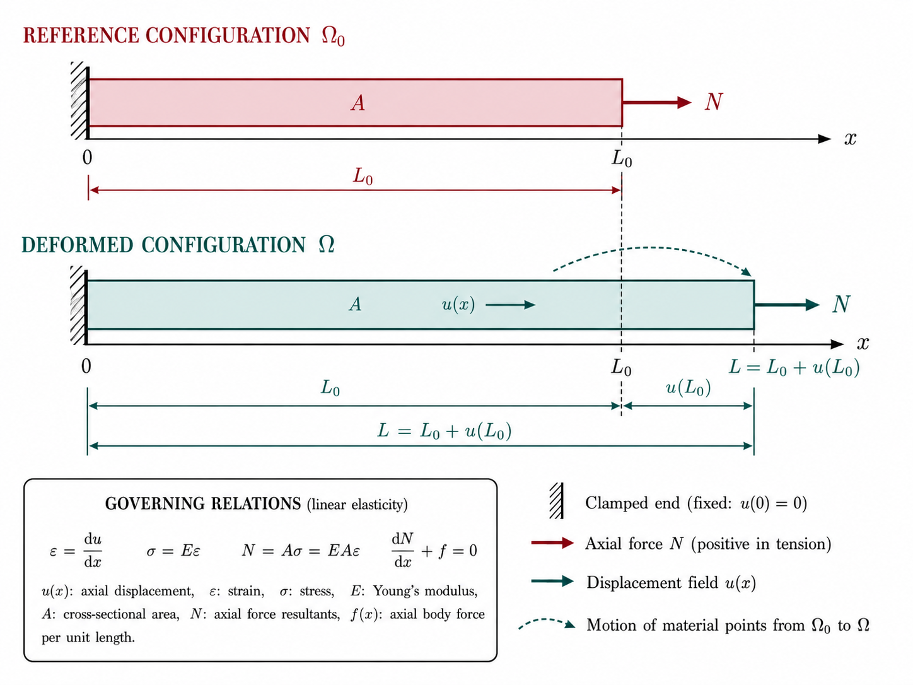
Airy stress function \(\phi(x,y)\), \(\nabla^4\phi=0\):
\[ \sigma_{xx}=\phi_{,yy},\quad \sigma_{yy}=\phi_{,xx},\quad \sigma_{xy}=-\phi_{,xy}. \]
Symbols: \(\phi\): Airy stress function; \(\nabla^4\): biharmonic operator (\(\partial^4/\partial x^4+\cdots\)); \(\phi_{,ij}\): \(\partial^2\phi/\partial x_i\partial x_j\); \(\sigma_{xx},\sigma_{yy},\sigma_{xy}\): in-plane Cauchy stresses; \(t,L\): plate thickness and in-plane length scale; \(x_3\): out-of-plane coordinate.
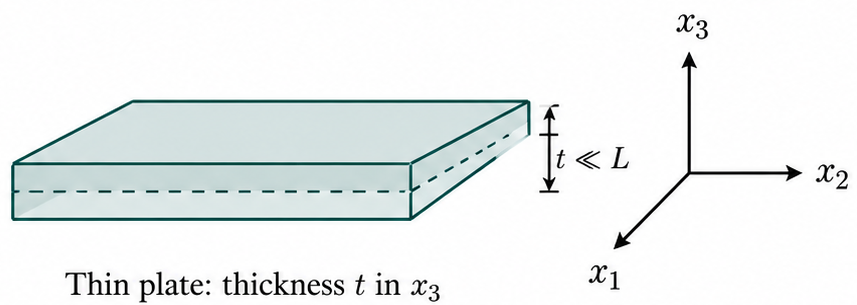
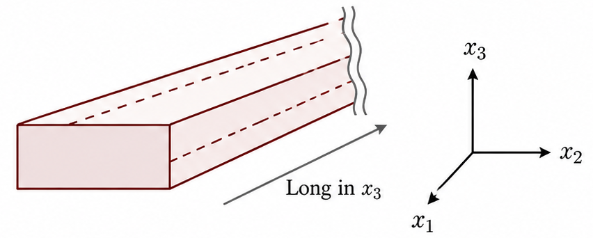
Four recurring routes for \(\nabla^4\phi=0\) with different geometry / BCs:
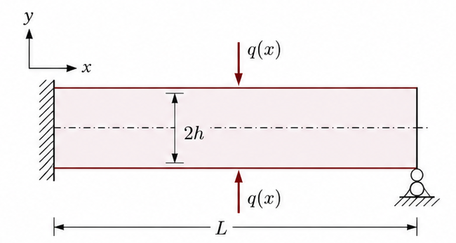
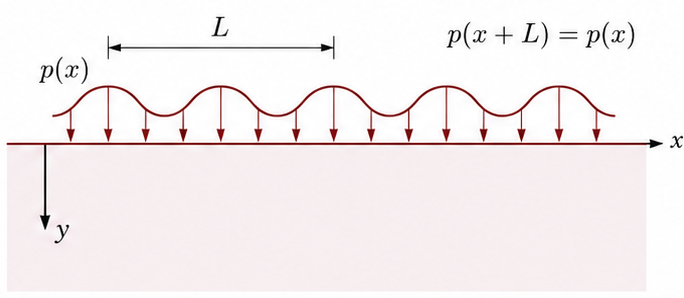
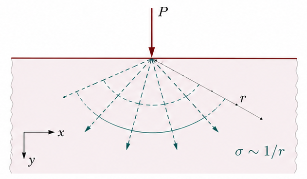
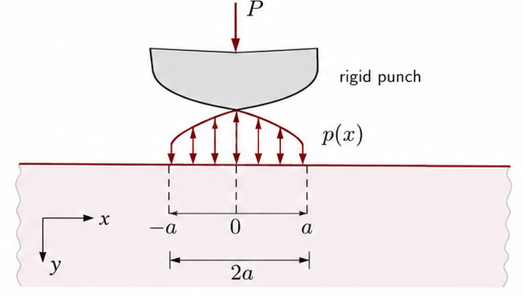
Symbols: \(q(x)\): transverse distributed load on a beam; \(L,2h\): beam span and total depth; \(p(x)\): periodic surface pressure; \(P\): concentrated line load; \(r\): radial distance from a load; \(a\): half-width of contact zone.
\[ \nabla^4\phi=0 \ \Rightarrow\ \phi(r,\theta)\ \text{with}\ r,\theta,\ln r,\ \theta\ln r\ \text{modes}. \]
Symbols: \(r,\theta\): polar coordinates; \(\phi(r,\theta)\): Airy function in polar form; \(2\alpha\): wedge opening angle; \(\ln r,\ \theta\ln r\): typical singular / logarithmic modes.
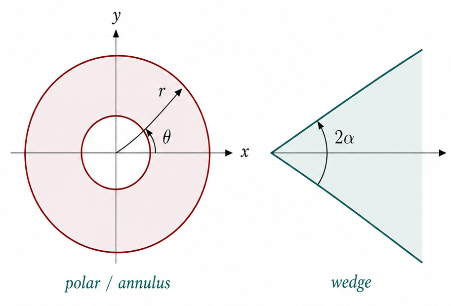
\[ \nabla\!\cdot\!\boldsymbol{\sigma}+\mathbf{f}=\mathbf{0},\quad \mathbf{u}(\mathbf{x})=\int G(\mathbf{x},\boldsymbol{\xi})\,\mathbf{f}(\boldsymbol{\xi})\,\mathrm{d}V_\xi. \]
Symbols: \(G(\mathbf{x},\boldsymbol{\xi})\): Green's function (displacement kernel); \(\mathbf{x},\boldsymbol{\xi}\): field / source points; \(\mathrm{d}V_\xi\): volume element at \(\boldsymbol{\xi}\); \(\mathbf{P}\): concentrated point force; \(\mathbf{f}\): body-force density.
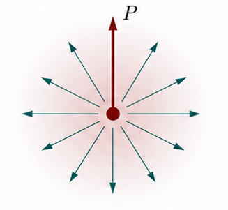
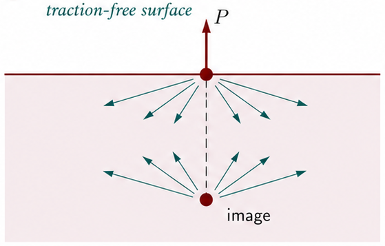
Symbols: \(\mathbf{b}\): Burgers vector (slip discontinuity); \(\boldsymbol{\sigma}^{\infty}\): remote uniform stress state; \(\varepsilon^{p}\): plastic strain from accumulated slip.
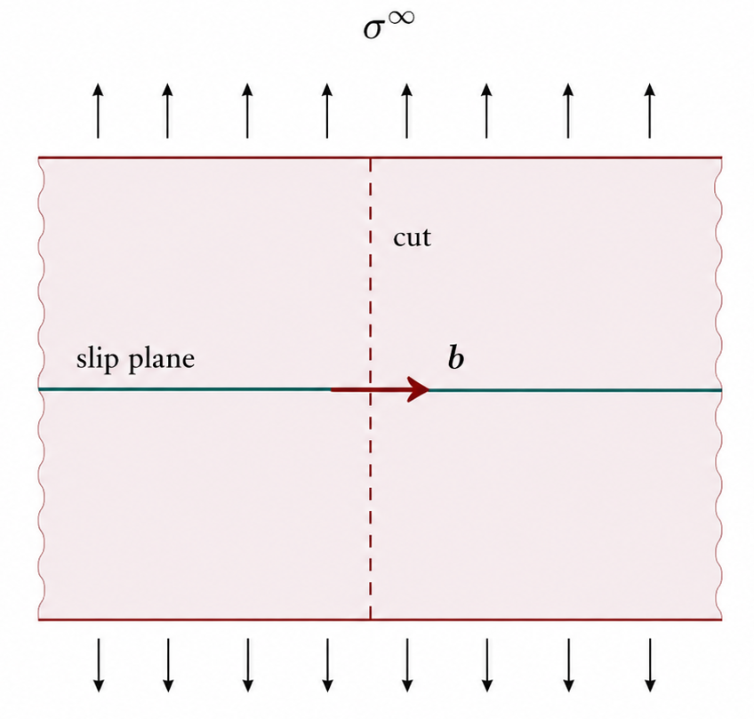
Symbols: \(\varepsilon_{ij}^{e},\varepsilon_{ij}^{p}\): elastic / plastic strain parts; \(C_{ijkl}\): elastic stiffness (Hooke's law on \(\varepsilon^{e}\)).
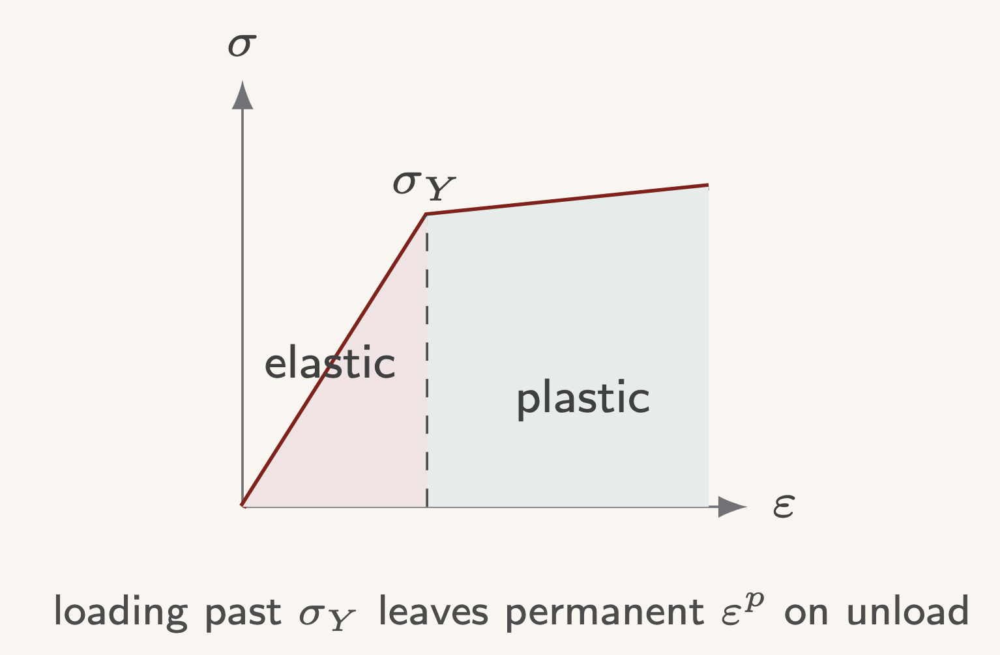
\(s_{ij}=\sigma_{ij}-\tfrac{1}{3}\sigma_{kk}\delta_{ij}\); \(J_2=\tfrac{1}{2}s_{ij}s_{ij}\), \(\sigma_{\mathrm{eq}}=\sqrt{3J_2}\).
von Mises: \(f=J_2-k^2\le 0\), \(k=\sigma_{Y}/\sqrt{3}\).
Tresca: \(\max_{i,j}|\sigma_i-\sigma_j| = 2k\).
Symbols: \(s_{ij}\): deviatoric stress (\(\sigma_{ij}-\tfrac{1}{3}\sigma_{kk}\delta_{ij}\)); \(J_2\): second invariant of deviator (\(\tfrac{1}{2}s_{ij}s_{ij}\)); \(\sigma_{\mathrm{eq}}\): von Mises equivalent stress; \(f\): yield function (\(f\le 0\) admissible); \(k,\sigma_Y\): yield strength in shear / tension; \(\sigma_i\): principal stresses.
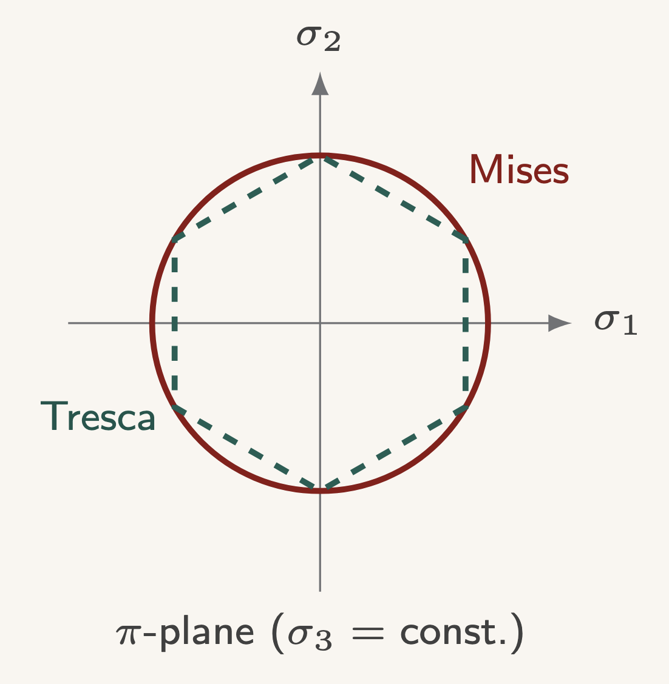
\[ \dot{\varepsilon}_{ij}^{p}=\dot{\lambda}\,\frac{\partial f}{\partial\sigma_{ij}}=\dot{\lambda}\, s_{ij},\qquad \dot{\varepsilon}_{kk}^{p}=0. \]
Elastic predictor \(\boldsymbol{\sigma}^{\mathrm{tr}}\); if \(f^{\mathrm{tr}} > 0\), return radially to \(f=0\).
Symbols: \(\dot{\varepsilon}_{ij}^{p}\): plastic strain rate; \(\dot{\lambda}\): plastic multiplier (consistency parameter); \(\boldsymbol{\sigma}^{\mathrm{tr}},f^{\mathrm{tr}}\): elastic trial stress / yield function; \(s_{ij}\): stress deviator (flow direction for \(J_2\) plasticity).
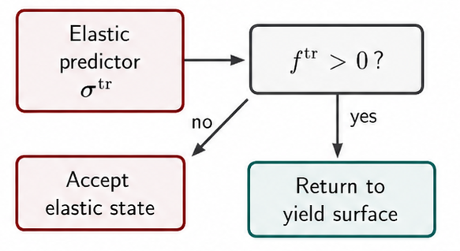
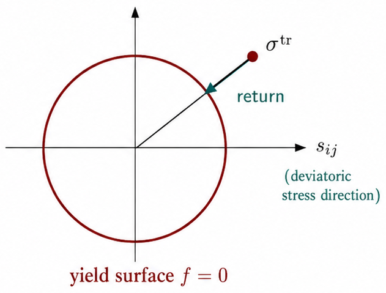
Symbols: \(2a\): crack length; \(\sigma^{\infty}\): remote applied normal stress; \(r\): distance from crack tip; \(K_I\): mode-I stress intensity factor; \(K_{Ic}\): fracture toughness (critical \(K_I\)); \(\mathcal{G}\): energy release rate; \(J\): path-independent \(J\)-integral; \(U\): total potential / strain energy.
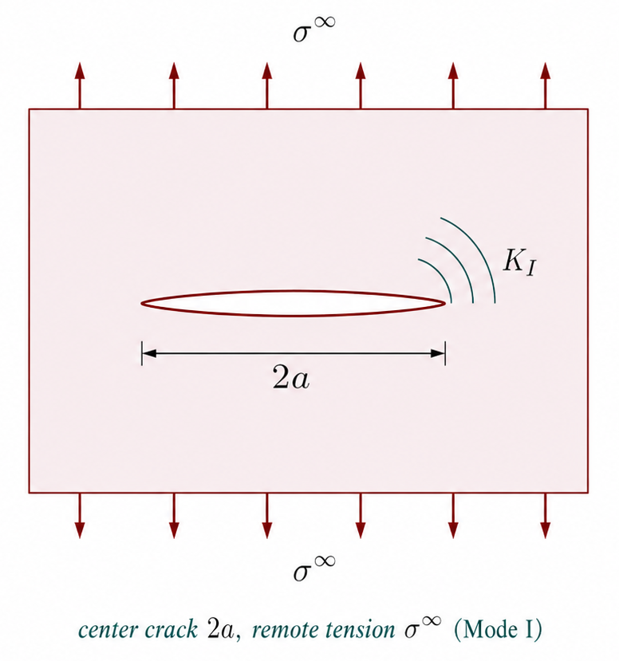
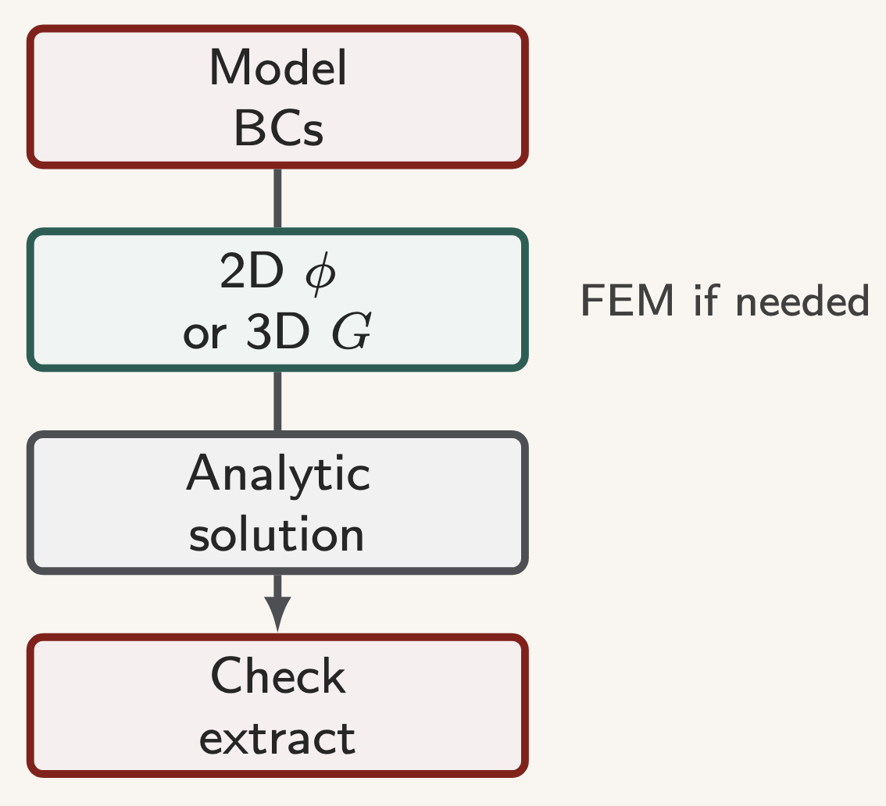
Symbols: BCs: boundary conditions (\(S_u,S_t\)); \(\phi\): Airy stress function (2D); \(G\): Green's function (3D); \(\sigma\): stress tensor; \(U\): strain / potential energy.
Symbols: \(\phi\): Airy function; \(\boldsymbol{\varepsilon}^{e,p}\): elastic / plastic strain; \(J_2\): second deviatoric invariant; \(K_I,\mathcal{G},J\): fracture parameters.
Thank you.